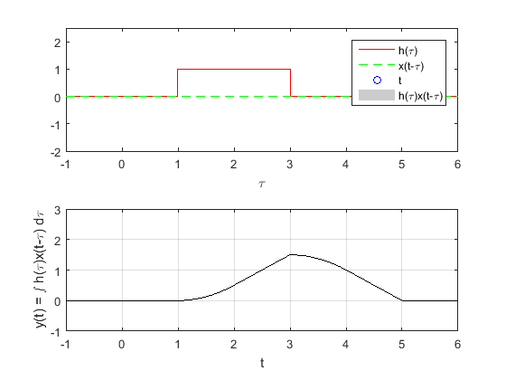

Práctica 4: Convolución y Correlación de señales en tiempo continuo
Contents
Datos generales:
Autores:
- Dominguez Rivera José Iván
- Flores Alemán Héctor
- Ortiz Velazco Jaime Jonathan
- Sanjuan Vallejo Santiago Antonio
Grupo: 2TV1
Profesor: Dr. Rafael Martinez Martinez
Objetivos:
- Conocer métodos básicos de integración numérica
- Manipulación de instrucciones en MATLAB
- Simular convoluciones y correlaciones de señales continuas
Introduccion
%En esta practica mostraremos como se comportan la convolucion y la %correlacion de dos señales, y la representacion grafica que esta conlleva.
Desarrollo
Problema 1 PR04
Realiza la convolución de las siguientes señales
figure(12) t=0:0.1:5; x1=@(t) ((-1*t)+1).*(t>=0 & t<=1)+(t-1).*(t>1&t<=2); x2=@(t) 1.*(t>=0&t<=1); fplot(x1,[0,3],'r') grid on title('x1(t)') xlabel('t') ylabel('f(t)') axis([-2 2 -3 3]) figure(13) fplot(x2,[0,3],'r') grid on title('x2(t)') xlabel('t') ylabel('f(t)') axis([-2 2 -2 2]) convconm1(x1,x2)

Problema 2 PR04
Realiza la convolucion de las siguientes señales
figure(14) t=0:0.1:3; %x1=(t1<1).*(t1)+(t1>=1).*(1); %x2=(t<=1).*0+(t>=1).*1+(t>3).*0; x1=@(t) (t).*(t>=0&t<=1) + 1.*(t>1&t<2); x2=@(t) 1.*(t>=1&t<=3); fplot(x1,[0,3],'r') grid on title('x1(t)') xlabel('t') ylabel('f(t)') axis([0 3 -3 3]) figure(15) fplot(x2,[0,3],'r') grid on title('x2(t)') xlabel('t') ylabel('f(t)') axis([0 3 0 3]) convconm2(x1,x2)
Problema e)
Realice la autocorrelacion de :

figure(10) x1=@(t) heaviside(t)-(2.*heaviside(t-3))+heaviside(t-4); %%definimos a x1 x11=@(t) heaviside(-t)-(2.*heaviside(-t-3))+heaviside(-t-4);%%la invertimos subplot(1,4,1) syms t fplot(x1,[-10,10],'r') grid on title('x1(t)') axis([-10 10,-5 5]); figure(11) t=[-10:0.01:10]; plot(t, x11(t)) grid on title('x11(t)') axis([-10 10,-5 5]); convconmchak(x11,x1) % Resultado analitico figure t1=-4:0.01:-3; t2=-3:0.01:-1; t3=-1:0.01:0; t4=0:0.01:1; t5=1:0.01:3; t6=3:0.01:4; subplot(1,3,3) plot(t1, -4-t1) hold on plot(t2,t2+2) plot(t3,3*t3+4) plot(t4,-3*t4+4) plot(t5,-t5+2) plot(t6,-4+t6) grid on title('x(t)*h(t)') axis([-7 7 -5 5]);
Ejercicio 4 PR06
%Tomando las señales x0=u(t)-2u(t-2)+u(t-4) y x1=u(t)-2u(t-3)+u(t-4) y realizando la correlacion de ambas funciones con el siguiente codigo podemos obtener las graficas figure(1) subplot(1,4,1) syms t x0=@(t) heaviside(t)-(2.*heaviside(t-2))+heaviside(t-4); fplot(x0,[-10,10],'r') grid on title('x0(t)') axis([-10 10,-5 5]); subplot(1,4,2) x1=@(t) heaviside(t)-(2.*heaviside(t-3))+heaviside(t-4); fplot(x1,[-10,10],'r') grid on title('x1(t)') axis([-10 10,-5 5]); t1=2:0.01:4; t2=1:0.01:2; t3=0:0.01:1; t4=-1:0.01:0; t5=-2:0.01:-1; t6=-3:0.01:-2; t7=-4:0.01:-3; subplot(1,3,3) plot(t1,-4+t1) hold on plot(t2,-t2) plot(t3,-3.*t3+2) plot(t4,-t4+2) plot(t5,3.*t5+6) plot(t6,t6+2) plot(t7,-4-t7) grid on title('x(t)*h(t)') axis([-5 10 -5 5]); %haciendo a x1(-t) en x2 x2=@(t) heaviside(-t)-(2.*heaviside(-t+3))+heaviside(-t+4); %Haciendo la correlacion de las funciones, podemos observar que la primera %grafica representa como se estan haciendo convolucion la una a la orta y %por debajo de esta se puede observara el resultado de la correlacion de %las funciones. CORRELACION(x0,x2);